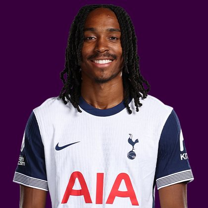

PITCHKEEP
Premier League ranks
Player File · DEF TOT · Premier #310

Djed Spence
DEF · Spurs · age 26 · £4.5m
2025/26 Premier League
| Year | Starts | Min | G | A | xG | xA | CS | GC | Bonus | YC | Sleeper | FPL |
|---|---|---|---|---|---|---|---|---|---|---|---|---|
| 2025/26 | 23 | 2049 | 0 | 0 | 0.9 | 1.77 | 9 | 31 | 3 | 4 | 56.8 | 78 |
FPL news
Unavailable - Has joined Internazionale permanently
Plus
- 56.8 Sleeper BPL 2025 points (Pitch #228).
- Consensus 123.0 vs Sleeper #228 - the industry still believes more than 2025/26 counted.
Minus
- Unavailable; Has joined Internazionale permanently.
- Board spread 123-228 (FPL Ownership to Sleeper BPL 2025).
PitchKeep Take · The Premier
Djed Spence is a defender for Spurs, age 26, £4.5m. The Premier ranks him 310th overall by splitting Sleeper BPL 2025 (#228, 56.8 points) with the consensus of 4 other boards (123.0). The industry still has him 105 spots ahead of the 2025/26 Sleeper count. The Premier pays that reputation something, not everything. Brand does not outrun a down year, and a down year does not erase a player Spurs still builds around.
The 2025/26 Premier League line is 23 starts and 2049 minutes, 0 goals and 0 assists, 9 clean sheets, 31 goals against, 44 tackles and 72 CBI. Official FPL scored it at 78 points (2.6 per match) with 3 bonus. Sleeper's table turned the same counting stats into 56.8. Defenders get 10 a goal, 7 an assist, 6 a clean sheet, and −2 a goal against. CBI at 0.4 and tackles at 1 are how a centre-back cracks the overall 50.
Underlying: 0.9 xG, 1.77 xA, 2.67 xGI and -1.8 above expected assists. The defensive events are the floor: 44 tackles, 72 clearances/blocks/interceptions, 9 shutouts. Sleeper is built to notice that. ICT and xGI boards are not, which is why a centre-back's spread on this board is usually ugly and still informative. The friendliest board is FPL Ownership at 123; the coldest is Sleeper BPL 2025 at 228.
Market: £4.5m, 5 boards on the file. Price is the FPL tax, not the rank. The Premier is who produced and who the boards still believe. ICT 70.5.
Instruction: he is on the 400, which is already a statement, and he is not a star. Stash in Sleeper if the minutes are real. Do not let a Pitch screenshot make you start him over a Premier top-80. FPL flag: unavailable; Has joined Internazionale permanently. Nearby on The Premier: Felipe Silva, Kevin Danso, Kepa Arrizabalaga Revuelta. Versus The Pitch (Sleeper-only #228), the hybrid moves him down to #310. That move is the third list doing its job.
He is 26, which on this board is neither a dart nor a warning label. Prime-age defenders get ranked on what they just did and whether Spurs still gives them the ball. 2049 minutes says yes. The 2026/27 FPL price (£4.5m) is the app's guess at whether that continues. The Premier is the blend of that guess and the box score.
Full-backs and centre-backs separate on this board by attacking events. 0 goals and 0 assists are how a defender outruns his GA column. Without those, you are betting 9 clean sheets and the CBI stream (72) against 31 goals against at −2 a piece. Spurs's 2026/27 defensive shape is therefore half of this player's rank. The other half already happened, across 23 starts.
How to use the file: The Pitch is the Sleeper-only 400 (he is #228 there). The Premier is the 50/50 with every other board we track. Attack, Midfield, Defence, and Keepers re-rank the same Sleeper table by position. BK Value on this page follows The Premier when you are on the hybrid calculator and The Pitch when you are on the Sleeper calculator. Same curve either way - 12,000 at 1.01.
Sleeper vs FPL
Same 2025/26 line, two scoring tables
Board graph
Spread 123-228 · 5 sources
Tape · 2025/26 Premier League
Djed Spence •Welcome to Inter Milan ?🔵⚫ 2026 Goals, Defensive Skills & Assists | Highlights
Every Board
Spread 123-228 · 5 sources
| Source | Rank |
|---|---|
| FPL Ownership | 123 |
| FPL 2025/26 Points | 171 |
| FPL xGI | 190 |
| FPL ICT Index | 198 |
| Sleeper BPL 2025 | 228 |
All players · The Premier · The Pitch · PK News · Calculator